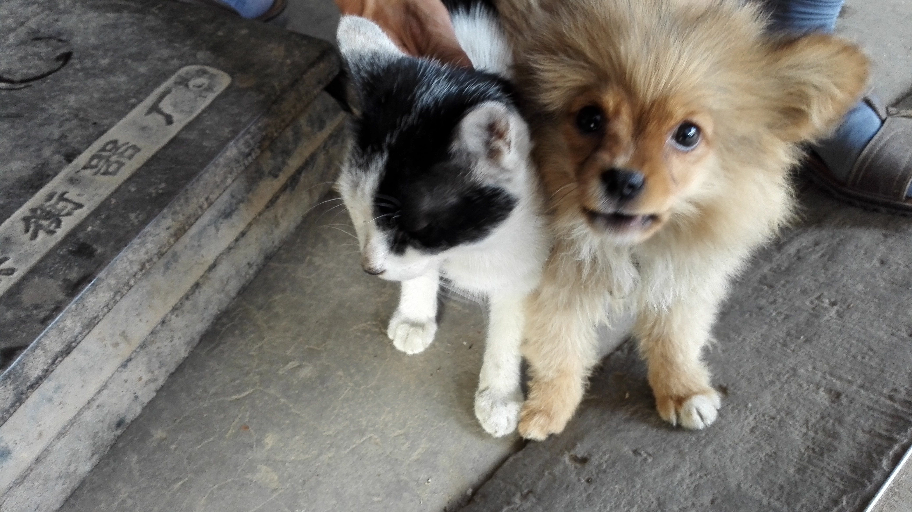
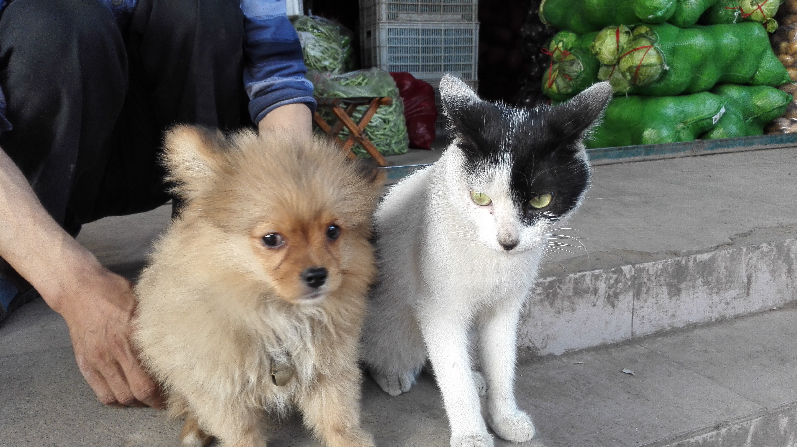
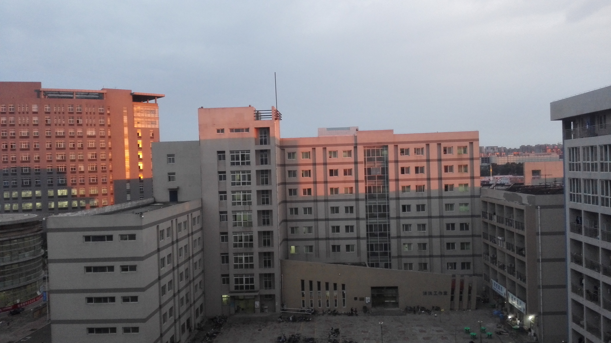
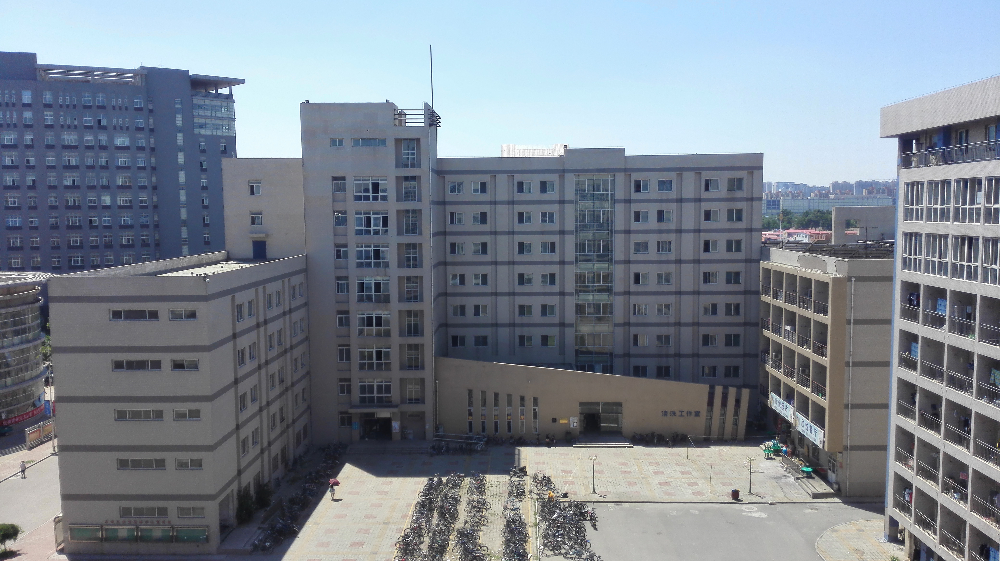
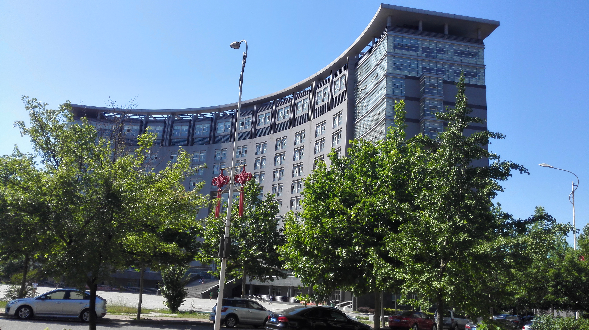

博客

博客，仅音译，英文名为Blogger,为Web Log的混成词。它的正式名称为网络日记；又音译为部落格或部落阁等，是一种通常由个人管理、不定期张贴新的文章的网站。博客上的文章通常根据张贴时间，以倒序方式由新到旧排列。许多博客专注在特定的课题上提供评论或新闻，其他则被作为比较个人的日记。一个典型的博客结合了文字、图像、其他博客或网站的链接及其它与主题相关的媒体，能够让读者以互动的方式留下意见，是许多博客的重要要素。大部分的博客内容以文字为主，仍有一些博客专注在艺术、摄影、视频、音乐、播客等各种主题。博客是社会媒体网络的一部分。比较著名的有新浪、网易等博客。
1、个人自由表达和出版；
2、知识过滤与积累；
3、深度交流沟通的网络新方式；
4、博客营销。
但是，要真正了解什么是博客，最佳的方式就是自己马上去实践一下，实践出真知；如果你现在对博客还很陌生，我建议直接去找一个博客托管网站。先开一个自己的博客帐号。反正比注册邮件更简单，也不用花费一分钱，觉得没劲也就随手扔掉得了。
博客，之所以公开在网络上，就是因为他不等同于私人日记，博客的概念肯定要比日记大很多，它不仅仅要记录关于自己的点点滴滴，还注重它提供的内容能帮助到别人，也能让更多人知道和了解。
很好的一句话：博客永远是共享与分享精神的体现。
2、知识过滤与积累；
3、深度交流沟通的网络新方式；
4、博客营销。
但是，要真正了解什么是博客，最佳的方式就是自己马上去实践一下，实践出真知；如果你现在对博客还很陌生，我建议直接去找一个博客托管网站。先开一个自己的博客帐号。反正比注册邮件更简单，也不用花费一分钱，觉得没劲也就随手扔掉得了。
博客，之所以公开在网络上，就是因为他不等同于私人日记，博客的概念肯定要比日记大很多，它不仅仅要记录关于自己的点点滴滴，还注重它提供的内容能帮助到别人，也能让更多人知道和了解。
很好的一句话：博客永远是共享与分享精神的体现。
第一、博客的选择
权重比较高的博客有新浪、搜狐、网易和百度空间，我平时也比较注重于这几个博客，而其他诸如和讯、天涯、凤凰等博客大家若有时间也是可以慢慢养着，虽然他们的人气无法跟前者相比，但还是有人会看，所谓多一点资源则多一点机会，有耐心的人可以试一下。这里有一点要注意，在选择博客时还要查询它是否设有nofollow标签。
第二、内容要“精”，具有可读性
内容为王，不管是网站内容还是养博客都同样适用。博客内容的质量是博客生存的基础。好的博客不要只是转载，还应该有适量的原创。当然，伪原创也是可以的，但是要对标题、内文进行充分的加工，确保内容的新鲜，吸引搜索引擎和网民的关注。内容最好是图文并茂，可以吸引点击。
第三、博客需要定时更新。
由于做博客推广的人太多，就算博客网站本身的权重再高，想让博客为自己网站带来流量也需要一定的时间。一般一个博客要用心维护几个月之后才可能看见效果。
第四、博客质量更重要。
博客也是有权重的，权重低的博客文章也很有可能不被收录，既然都不收录那你发文章上去就是徒劳取不到任何效果。大量建立博客还有被搜索引擎认为采取博客群发作弊一旦认为你是作弊，轻则降权处理，重则直接K站。
第五、博客与博客间需互连。
如今众多的博客都可以开办友情链接，我们在每个博客上除开可添加自个儿的网站链接外，还可以把每个博客互衔接接起来。
网络营销讲师石建鹏老师提醒我说过，“网络营销实操是一件很枯燥的事情，博客推广之路漫长无期，不要操之过急。做好一个博客也并不是想象的那么简单或者那么难”。
权重比较高的博客有新浪、搜狐、网易和百度空间，我平时也比较注重于这几个博客，而其他诸如和讯、天涯、凤凰等博客大家若有时间也是可以慢慢养着，虽然他们的人气无法跟前者相比，但还是有人会看，所谓多一点资源则多一点机会，有耐心的人可以试一下。这里有一点要注意，在选择博客时还要查询它是否设有nofollow标签。
第二、内容要“精”，具有可读性
内容为王，不管是网站内容还是养博客都同样适用。博客内容的质量是博客生存的基础。好的博客不要只是转载，还应该有适量的原创。当然，伪原创也是可以的，但是要对标题、内文进行充分的加工，确保内容的新鲜，吸引搜索引擎和网民的关注。内容最好是图文并茂，可以吸引点击。
第三、博客需要定时更新。
由于做博客推广的人太多，就算博客网站本身的权重再高，想让博客为自己网站带来流量也需要一定的时间。一般一个博客要用心维护几个月之后才可能看见效果。
第四、博客质量更重要。
博客也是有权重的，权重低的博客文章也很有可能不被收录，既然都不收录那你发文章上去就是徒劳取不到任何效果。大量建立博客还有被搜索引擎认为采取博客群发作弊一旦认为你是作弊，轻则降权处理，重则直接K站。
第五、博客与博客间需互连。
如今众多的博客都可以开办友情链接，我们在每个博客上除开可添加自个儿的网站链接外，还可以把每个博客互衔接接起来。
网络营销讲师石建鹏老师提醒我说过，“网络营销实操是一件很枯燥的事情，博客推广之路漫长无期，不要操之过急。做好一个博客也并不是想象的那么简单或者那么难”。
时常更新
时常更新不仅对博客有利，也是成功的必备条件。如果没有做到每天至少更新一次，就没有充分利用博客的潜力。时常更新不仅是因为读者喜欢新鲜的内容，还因为可以增加搜索引擎的偏好度。搜索引擎喜欢新的内容，网站越常更新，搜索引擎便越常造访，如此可以让你的博客经常被列入搜索的结果中。不断更新，一旦让搜索引擎信赖，便能提高博客搜索结果中的排名。
积极回应评论
在每篇文章的下面提供评论框，可以鼓励读者评论的文章。要通过电子邮件或在自己的评论框回应他们的意见，以进一步讨论，让访问者意识到非常重视他们的意见。
多和其它博主交流
建立利益同盟（community of interest）是企业或个人成功经营博客的关键。对大部分企业而言，这个同盟中混杂着现有的博客写手、新资源以及业界有影响力的人士，以及员工、合作伙伴、供货商及顾客等。对个人而言，你的利益同盟是你的朋友和与有相同兴趣爱好的人。利益同盟就是感兴趣的同盟加上对方感兴趣的同盟。在你的利益同盟中留言是让这些博客写手及他们的读者了解他们可能会对你的博客感兴趣。大家最常发现新博客的一种方式就是通过共同的链接，如果可以参与其间便能获得更多的流量，就能与其他博客写手及他们的读者建立关系。
开放权限
多与好友交换友情链接，扩大自己的博客圈子
与好友交换友情链接，不仅可以获得很多直接的访问量，还可以扩大博客交往圈子，让好友的好友也了解。交换链接的意义实际上已经超出了是否可以直接增加访问量这一范畴。
让访问者很容易digg
诸如digg等网站可以让读者给自己喜爱的博客和文章投票评论。在每篇文章的底部都包含这些网站的链接，使访问者能够轻松的将文章提交给这些网站并进行投票评论。一旦你的文章被Digg到这些网站，就有更多的人看到的文章，并可以对你的文章进行投票和评论。可以加入一个网页说明如何订阅，附上很多博客都使用的橘色XML图示，表示这个网站是可以订阅的。应该让读者有权自行决定是否订阅，尽可能减去障碍，使访客变成读者。
广泛提交
1.向搜索引擎提交
搜索引擎像Google等都喜欢博客，但是，不是所有的搜索引擎都容易发现的博客。所以，还要人工呈递来补充。
2.向博客搜索引擎提交
另外，随着博客的兴起，各大搜索引擎纷纷推出了博客搜索功能。如果博客能被抓取到各大搜索引擎博客搜索的索引库中的话，那将会给博客带来更多的访问量。
3. 向博客目录网站提交
生动、创意的标题
标题是成功经营博客的一大关键。北京货架好的标题可以让搜索引擎找到并为带进更多的流量。有魅力、好的标题可以吸引读者阅读的内容，换取更多的链接。标题对于搜索引擎、新闻种子（RSS）以及其他外部环境理解的博客非常重要。在这些情况下，用户通常只看标题，并据此判断是否阅读整篇内容。
加入“博客圈”
在博客的BSP服务提供商中一般都会有“博客圈”，在博客圈中会有各种不同类型的博客圈内容例如“原创文学交流圈”“驴友天下圈”“电影评论圈”“服装潮流圈”“易发电子传真圈”等，多加入与自己博客定位相同的圈子可以得到更多志同道合的朋友关注。
多参加官方活动
官方博客会不定期举办一些活动，比如节日活动或征文活动等，多参加官方活动，也可以获取高的流量，增加更多的知名度和关注度。
博客创造了很多销售奇迹，那么中小企业应该怎么做博客呢？
官方博客
草根企业不要老是开博客来发布广告。你可以分享企业的创业历程、文化、理念以及各方面的技巧。
专栏博客
专栏博客平台网站，有一定的权威和影响力。几乎每一个行业或产业都会有几个专栏博客平台，聚集了许多的行业专家，在业界内都有一定的话语权，成为很多商家、经理、销售总监等的营养吸收基地。长期坚持的行业或产业专栏撰写先行者，会很快成为该行业或产业的意见领袖，至少有一定的话语权。话语权已经夺得，宣传推广就更加不在话下了。
第三方博客
第三方的立场是客观公立又公正的，所以很多网民都以第三方的说法作为论据和观点参考。这样一来，怎么控制第三方博客上的言论呢？
我不主张企业内部人士以其他名义虚假开建第三方博客。可以联系一些业界朋友或其他非竞争企业开建博客，博客大家一起管理，不同领域人士来做第三方评论。比如做化工的可以评论礼品行业的，做礼品的可以评论饮料行业的，企业间可以相互做评论。虽然不会很专业，不过观点绝对是客观的，客观就会获得尊重和关注。
时常更新不仅对博客有利，也是成功的必备条件。如果没有做到每天至少更新一次，就没有充分利用博客的潜力。时常更新不仅是因为读者喜欢新鲜的内容，还因为可以增加搜索引擎的偏好度。搜索引擎喜欢新的内容，网站越常更新，搜索引擎便越常造访，如此可以让你的博客经常被列入搜索的结果中。不断更新，一旦让搜索引擎信赖，便能提高博客搜索结果中的排名。
积极回应评论
在每篇文章的下面提供评论框，可以鼓励读者评论的文章。要通过电子邮件或在自己的评论框回应他们的意见，以进一步讨论，让访问者意识到非常重视他们的意见。
多和其它博主交流
建立利益同盟（community of interest）是企业或个人成功经营博客的关键。对大部分企业而言，这个同盟中混杂着现有的博客写手、新资源以及业界有影响力的人士，以及员工、合作伙伴、供货商及顾客等。对个人而言，你的利益同盟是你的朋友和与有相同兴趣爱好的人。利益同盟就是感兴趣的同盟加上对方感兴趣的同盟。在你的利益同盟中留言是让这些博客写手及他们的读者了解他们可能会对你的博客感兴趣。大家最常发现新博客的一种方式就是通过共同的链接，如果可以参与其间便能获得更多的流量，就能与其他博客写手及他们的读者建立关系。
开放权限
多与好友交换友情链接，扩大自己的博客圈子
与好友交换友情链接，不仅可以获得很多直接的访问量，还可以扩大博客交往圈子，让好友的好友也了解。交换链接的意义实际上已经超出了是否可以直接增加访问量这一范畴。
让访问者很容易digg
诸如digg等网站可以让读者给自己喜爱的博客和文章投票评论。在每篇文章的底部都包含这些网站的链接，使访问者能够轻松的将文章提交给这些网站并进行投票评论。一旦你的文章被Digg到这些网站，就有更多的人看到的文章，并可以对你的文章进行投票和评论。可以加入一个网页说明如何订阅，附上很多博客都使用的橘色XML图示，表示这个网站是可以订阅的。应该让读者有权自行决定是否订阅，尽可能减去障碍，使访客变成读者。
广泛提交
1.向搜索引擎提交
搜索引擎像Google等都喜欢博客，但是，不是所有的搜索引擎都容易发现的博客。所以，还要人工呈递来补充。
2.向博客搜索引擎提交
另外，随着博客的兴起，各大搜索引擎纷纷推出了博客搜索功能。如果博客能被抓取到各大搜索引擎博客搜索的索引库中的话，那将会给博客带来更多的访问量。
3. 向博客目录网站提交
生动、创意的标题
标题是成功经营博客的一大关键。北京货架好的标题可以让搜索引擎找到并为带进更多的流量。有魅力、好的标题可以吸引读者阅读的内容，换取更多的链接。标题对于搜索引擎、新闻种子（RSS）以及其他外部环境理解的博客非常重要。在这些情况下，用户通常只看标题，并据此判断是否阅读整篇内容。
加入“博客圈”
在博客的BSP服务提供商中一般都会有“博客圈”，在博客圈中会有各种不同类型的博客圈内容例如“原创文学交流圈”“驴友天下圈”“电影评论圈”“服装潮流圈”“易发电子传真圈”等，多加入与自己博客定位相同的圈子可以得到更多志同道合的朋友关注。
多参加官方活动
官方博客会不定期举办一些活动，比如节日活动或征文活动等，多参加官方活动，也可以获取高的流量，增加更多的知名度和关注度。
博客创造了很多销售奇迹，那么中小企业应该怎么做博客呢？
官方博客
草根企业不要老是开博客来发布广告。你可以分享企业的创业历程、文化、理念以及各方面的技巧。
专栏博客
专栏博客平台网站，有一定的权威和影响力。几乎每一个行业或产业都会有几个专栏博客平台，聚集了许多的行业专家，在业界内都有一定的话语权，成为很多商家、经理、销售总监等的营养吸收基地。长期坚持的行业或产业专栏撰写先行者，会很快成为该行业或产业的意见领袖，至少有一定的话语权。话语权已经夺得，宣传推广就更加不在话下了。
第三方博客
第三方的立场是客观公立又公正的，所以很多网民都以第三方的说法作为论据和观点参考。这样一来，怎么控制第三方博客上的言论呢？
我不主张企业内部人士以其他名义虚假开建第三方博客。可以联系一些业界朋友或其他非竞争企业开建博客，博客大家一起管理，不同领域人士来做第三方评论。比如做化工的可以评论礼品行业的，做礼品的可以评论饮料行业的，企业间可以相互做评论。虽然不会很专业，不过观点绝对是客观的，客观就会获得尊重和关注。
Collect from 企业网站模板
相册
记录生活的点滴
-

猫和狗
拍摄于：2015年7月8号 -

猫和狗
拍摄于：2015年7月8号 -

猫和狗
拍摄于：2015年7月11号 -

鲜花
拍摄于：2016年4月2号 -

大象
拍摄于：2016年4月2号 -

大山
拍摄于：2016年2月23号 -

宿舍楼
拍摄于：2015年6月7号 -

宿舍楼
拍摄于：2015年6月8号 -

综合楼
拍摄于：2015年6月8号
个人评价
本人性格热情开朗，待人友好，为人诚实谦虚。工作勤奋，认真负责，能吃苦耐劳，尽职尽责，有耐心。具有亲和力，平易近人，善于与人沟通。
活泼开朗、乐观向上、兴趣广泛、适应力强、上手快、勤奋好学、脚踏实地、认真负责、坚毅不拔、吃苦耐劳、勇于迎接新挑战。
忠实诚信,讲原则，说到做到，决不推卸责任；有自制力，做事情始终坚持有始有终，从不半途而废；肯学习,有问题不逃避,愿意虚心向他人学习；自信但不自负,不以自我为中心；愿意以谦虚态度赞扬接纳优越者,权威者；会用100%的热情和精力投入到工作中；平易近人。为人诚恳,性格开朗,积极进取,适应力强、勤奋好学、脚踏实地，有较强的团队精神,工作积极进取,态度认真。
本人性格开朗、为人诚恳、乐观向上、兴趣广泛、拥有较强的组织能力和适应能力、并具有较强的管理策划与组织管理协调能力。